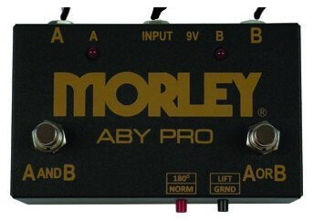
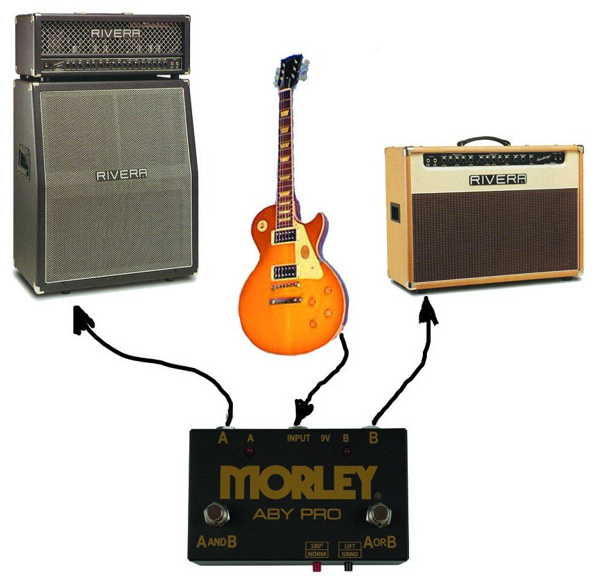

ABY Pro
Selector Combiner · Owner’s Manual

Thank you for choosing a Morley® switch. You now own the best switch made!
Please take a few minutes to familiarize yourself with the features of your new switch. With common sense handling, it will last for years. We hope you enjoy using it as much as we enjoyed building it.
Warranty
All Morley® pedals are warranted for one year from date of purchase. There is no need to register your pedal for warranty. Simply retain your original dated purchase receipt. To obtain warranty service, contact the store where purchased.
Connections
- 9V
- Use only Morley® 9 VDC 300 milliamp regulated adapter. Center Polarity is negative.
- INPUT
- Input jack. Plug instrument into this jack using 1/4" guitar cable.
- A & B JACK
- Connect amplifiers to these jacks using a 1/4" guitar cable.
NOTE: You’ll find cords fit very tightly into the 1/4" jacks. The tight fit helps prevent the cord from being accidentally unplugged. Make sure cords are completely plugged in for best results.
AC adapter
All Morley® pedals use Morley® 9VDC 300 milliamp regulated adapter. Center pin polarity is negative. Using a non-regulated adapter could cause a low frequency hum in your amplifier. Using an adapter with the wrong polarity may damage the pedal.
Battery use & replacement
The ABY PRO is an active device, meaning it requires power to function. All Morley® pedals are designed to use one 9V battery or a 9V 300mA Regulated Adapter. Battery access is on the bottom cover via our “Quick Clip” Battery door. We suggest you use a good quality alkaline battery.
To prolong battery life, unplug your cord completely from the INPUT jack when not using the pedal. When the pedal is not used for extended periods, remove the battery from the pedal or replace it every six months to prevent leakage problems.
Isolation Transformers like the one used in this ABY PRO do tend to have a higher current draw so we recommend using an adapter whenever possible.
Features
- Isolation Transformer
- Channel B is equipped with 1:1 Isolation Transformers to prevent hum from electrical ground related issues and to balance signal. This maintains tone and volume and allows use of longer cables.
- Silent Switching
- Gold Contact Relays are used to prevent any switch “pop” or “click”.
- Polarity Switch
(Red Push Button) - Flips signal polarity to fix phase cancellation which can cause loss of volume, tone or signal cancellation.
- Ground Lift Switch
(Black Push Button) - Lifts signal ground to fix ground related noise. Overall ground reference remains intact.
- Pro Design
- No ground hum, no buzz, no switch noise, no crosstalk, no bleed and produces excellent signal integrity.
ABY PRO selector combiner instructions
The ABY PRO was designed to route one input signal to two output paths (see Set Up Example). Use standard Mono (TS – Tip/Sleeve) instrument cables. Plug instrument into INPUT. Connect from ABY PRO Output A to amp #1. Connect from Output B to amp #2. Right switch “A or B” selects back and forth between each amp individually. Left switch “A and B” turns on signal to both amps combined. LEDs show which amp is on or off. Signal sound strange? Try pushing the Polarity Switch. Got ground hum or buzz? Try pushing the Ground Lift Switch.
IMPORTANT: DO NOT USE THE ABY PRO ON A POWERED SPEAKER LINE! YOU WILL DAMAGE THE ABY PRO, THE AMP AND/OR THE SPEAKER(S).
Set Up Example

ABY PRO specifications
| POWER: | 9V Battery or Morley 9V 300 mA Regulated Power Supply (Center Negative) |
|---|---|
| LED INDICATORS: | Channel switched on or off. |
| DIMENSIONS: | 5.5" L x 3.5" W x 2.8" H |
| CURRENT DRAW: | 64 mA |